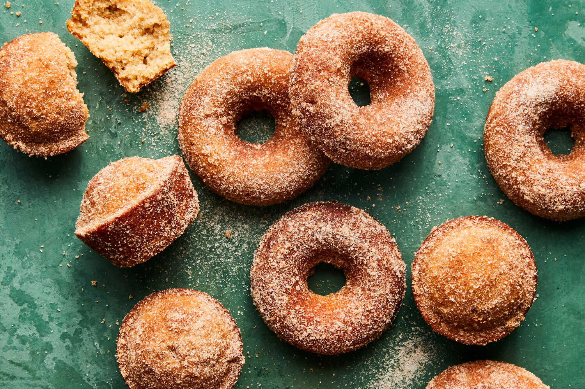

Baked Apple Cider Doughnuts

This recipe yields the classic flavor of baked cider doughnuts. For the most traditional result, a doughnut pan is recommended, but you can also bake these off in a muffin pan.
- Nonstick cooking spray
1¾ cup (225g)all-purpose flour1¼ tspbaking powder¾ tspsalt1 tspground cinnamon½ tspfreshly grated nutmeg10 tbsp (141g)unsalted butter, at room temperature¾ cup (165g)light brown sugar¼ cup (50g)granulated sugar2large eggs, at room temperature1 tspvanilla extract½ cup (120ml)apple cider, spiced preferred
Heat oven to 350°F (175°C). Lightly grease 2 (6-cavity) doughnut pans (or a 12-cup muffin tin) with nonstick spray. In a medium bowl, add flour, baking powder, salt, 1 teaspoon cinnamon and nutmeg and whisk to combine. Set aside.
In the bowl of a stand mixer fitted with the paddle attachment, cream 10 tablespoons (140 grams) butter, brown sugar and ¼ cup (50 grams) granulated sugar on medium speed until light and fluffy, 3 to 4 minutes. Add the eggs one at a time and mix until well incorporated after each addition, scraping the bowl as necessary. Beat in the vanilla extract.
Add the flour mixture and mix on low speed until incorporated. With the mixer running, add the apple cider in a slow, steady stream and mix to combine. Scrape the bowl well to make sure the batter is homogeneous.
Spoon the batter into prepared doughnut pans, filling them about ⅔ of the way. (You can also do this using a disposable piping bag or a resealable plastic bag with a ½-inch opening cut from one corner.) Bake until evenly golden brown and a toothpick inserted into the center of the thickest portion comes out clean, 12 to 15 minutes. Rotate the pans halfway through baking. (If you are making muffins, divide batter evenly between the prepared cups and bake for 15 to 20 minutes, rotating halfway through.)
6 tbsp (85g)unsalted butter, melted1 tspground cinnamon⅓ cup (70g)granulated sugar
While the doughnuts bake, whisk the granulated sugar and cinnamon together in a small bowl to combine. In a separate small bowl, melt the remaining 6 tablespoons butter. Let the doughnuts cool for 5 minutes after baking, then unmold them from the pans, brush with the melted butter and dredge them in the cinnamon sugar while they are still warm. Serve immediately, or let cool to room temperature.